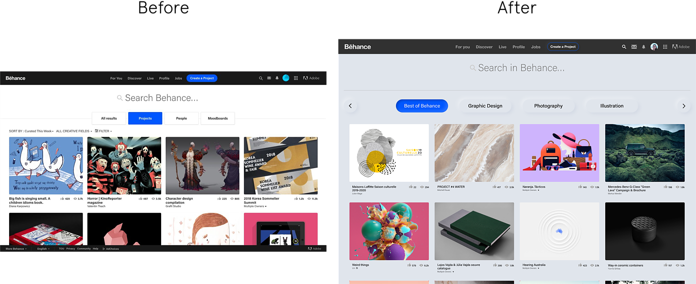

Introduction
Behance is a platfrom for creatives of just about every field and
discipline to showcase their work in the form of "projects". You can
search, like and follow people's works.
A redesign project initiated that includes a complete redesign of the
search experience in the Behance website. The process includes a
holistic study of the UI & UX elements and evaluating them based on the
NN group heuristics.
Subsiquently followed by improvements and tweaks in multiple places to
make the experience more seamless.
Process
Understanding The User
To userstand the users of behance better, I listed down observation
about how my friends use the platform and for what purpose. I looked
into various contexts of use of the platform. Based on this research, I
defined a user statement to help guide the decisions futher down the
line.


Evaluating current search experience
To evalute the current search experience on Behance I followed NN groups
heuristics for UI evaluation.

Lack of a dedicated search button.

Clustering of filter and sort functionality with poor categorizing

No option to easily remove or clear induvidual filters
Cannot browse through projects in
different categories.
Deciding what problems to work on
Next, I prioritized the problems to work on by using an evaluation
matrix. Mapping problems on a graph which compare the problems on two
main parameters:
-
User Value the solution would bring
-
Estimated time & effort required to solve the problem
Outcome
Categorizing and minimizing redundancy
Categorizing projects (based on frequently viewed creative fields) in
the initial "browse page" allowing users to quickly browse through them
when they are not looking for something specific to search, but rather
want to explore projects in discrete


Maximising focus by reducing distractions
While searching the user is allowed to focus on what's important by
darkening everything else, aiming to alleviate cognitive load. The
addition of a search button directs the user to the next step in the
process.

Optimizing functionality using Occam's Razor
Sort and filter buttons seperated to prevent misclicks and also the
removal of the sub-navigation tab to eliminate redundancy An extra
feature that has been added is, "view similar projects" button. This
appears when the user hovers the cursor over a project. It helps produce
more insightful results which are similar to that project in the same
page
Maintaining context to boost usability
Clicking "filter" reaveals the options in the same page rather than a
modal box. This aims to maintain consistency and flow in the minds of
the user

Quick search aimed towrds "Power Users"
The user can begin typing from any page in Behance, and after they have
typed three characters the quick search shows up. They can continue
typing to hen search it. This function is disables in special cases
like, commenting or using special keys.